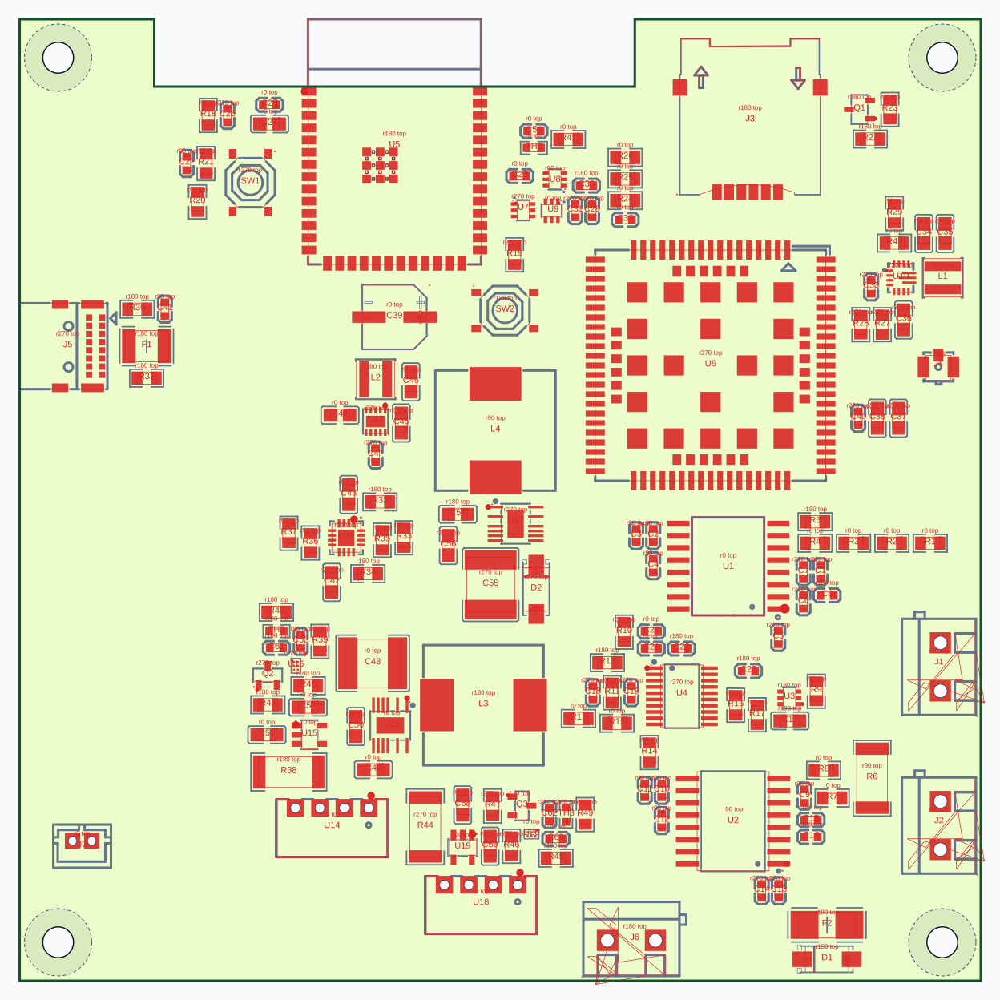
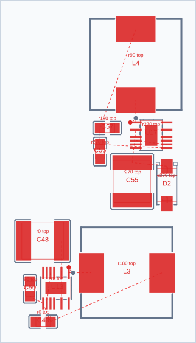
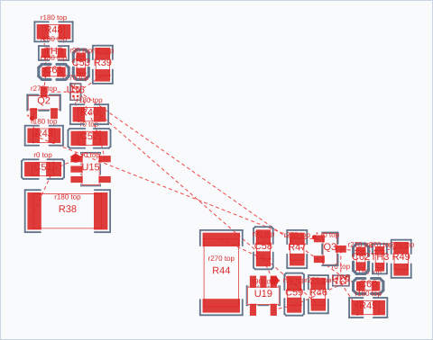
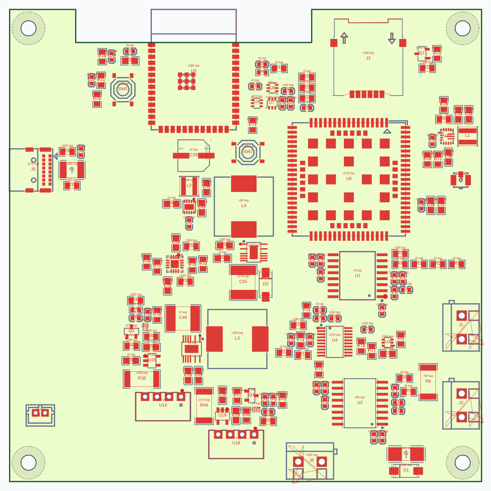

Один поиск с мягкими зазорами, штрафами за несовпадение осей и поворотов и дополнительными кандидатами постановки пары. Обычная упаковка сохранена как страховочный результат. Внутренние компоновки блоков одинаковы в двух попытках; альтернативные пересборки не подставлялись.
После выбора упаковки сохранены прежний локальный выбор вариантов блоков, общий postrefine и небольшое финальное выравнивание. Они не исключены из рабочего алгоритма. Контрольная пара индуктивностей — L3/L4 (hv_pos/hv_neg); L2 относится к logic_power.
Изменено компонентов в итоговой плате: 0. Итоговая плата осталась прежней; улучшение на Telemetry не подтверждено.
Позиционный штраф: допуск 0,15 мм, плавный переход к линейному росту после 1 мм, вес 8. Поворот: от 0 при совпадении до 24 при разнице 180°. Оба взвешиваются похожестью; бонуса за сближение нет. Порог похожести 0,78, для совместной постановки 0,85. Центр позиции и компонент направления могут различаться.
Обычные позиции не убраны: 32 места в предварительном списке плюс до 16 дополнительных позиций на осях. Совместная постановка добавляет переходы на два блока; состояния сравниваются на равной глубине. Перебираются допустимые повороты, четыре стороны и несколько зазоров. Фиксированная механика не участвует в перемещении пары.
Время: 113.82 с. Обычная упаковка воспроизвела прежние позиции: true. Фиксированных компонентов сдвинуто: 0.
Обязательные ограничения не ухудшены: true. Проверка изменения native: true. Абсолютная проверка: false → false; исходные нарушения не скрыты. Электрическая регрессия по защитной проверке: нет. Трассировка не выполнялась.
| Показатель | До | После |
|---|---|---|
| Длина MST, мм | 2392.86 | 2392.86 |
| Пересечения линий | 299 | 299 |
| Пересечения чужих падов | 296 | 296 |
| Штраф выравнивания | 127.68 | 127.68 |
| Опорные центры | Отклонение до → после, мм | Компоненты направления | Разница угла до → после |
|---|---|---|---|
| U14 / U18 | 8.00 → 8.00 | U14 / U18 | 0 → 0 |
| R38 / R44 | 5.71 → 5.71 | U16 / U20 | 90 → 90 |
| L4 / L3 | 1.24 → 1.24 | U17 / U13 | 90 → 90 |
| U2 / U1 | 0.50 → 0.50 | U2 / U1 | 0 → 0 |








Слева — обычная упаковка тех же блоков, справа — новое предложение. Правая картинка не означает принятия результата. Обязательные ограничения не ухудшены: false. Электрическая проверка: wiring score.
| Показатель | До | После |
|---|---|---|
| Длина MST, мм | 2407.12 | 2419.84 |
| Пересечения линий | 304 | 306 |
| Пересечения чужих падов | 299 | 300 |
| Штраф выравнивания | 128.61 | 104.61 |
| Опорные центры | Отклонение до → после, мм | Компоненты направления | Разница угла до → после |
|---|---|---|---|
| U14 / U18 | 8.00 → 6.50 | U14 / U18 | 0 → 0 |
| R38 / R44 | 5.71 → 4.21 | U16 / U20 | 90 → 90 |
| L4 / L3 | 1.37 → 1.37 | U17 / U13 | 90 → 90 |
| U2 / U1 | 0.50 → 0.50 | U2 / U1 | 0 → 0 |


| Ухудшенное правило | До | В предложении | Требование |
|---|---|---|---|
| hv_pos → usb_charge | 1.96 | 0.75 | >= 3.2mm clearance |
| hv_neg → logic_power | 0.49 | 0.42 | >= 3.2mm clearance |
Board soft spacing: 0.69mm extra, density 0.520, compactness scale 0.793
Board search alignment: 4 structural pairs; ordinary candidates and complete fallback retained; same block interiors
Board alignment proposal: score, score 16485465.12, alignment penalty 104.61
Board packaging: ordinary fallback selected, score 16198523.95
Block portfolio selected voltage_iso in board context: variant 0, shift 0,0.5mm; score 16198523.95 -> 16161824.87
Block portfolio selected esp_supply in board context: variant 0, shift 0.5,0mm; score 16161824.87 -> 16161610.24
Block portfolio selected lte_power in board context: variant 0, shift -1,0mm; score 16161610.24 -> 16137599.32
Block portfolio selected hv_neg in board context: variant 1, shift 0,1mm; score 16137599.32 -> 15942546.00
Block portfolio selected hv_pos in board context: variant 1, shift 0,0.5mm; score 15942546.00 -> 15885063.60
Block portfolio selected usb_charge in board context: variant 0, shift -1,0mm; score 15885063.60 -> 15744818.04
Block portfolio selected logic_power in board context: variant 0, shift -1,0mm; score 15744818.04 -> 15711377.43
Block portfolio selected low_charge_neg in board context: variant 0, shift 1,0mm; score 15711377.43 -> 15710409.61
Block portfolio: 12 blocks, 249 candidates, 8 accepted
J1: safe post-place improvement J1 rotate += 180; global score 15616903.75 -> 15614415.49. It was not applied because fixed placement must be preserved. Add refineGroup("post_J1", ["J1"], { rotateBy: [180] }) if this fixed component may rotate.
J7: safe post-place improvement J7 rotate += 180; global score 15616903.75 -> 15616854.217. It was not applied because fixed placement must be preserved. Add refineGroup("post_J7", ["J7"], { rotateBy: [180] }) if this fixed component may rotate.
Board soft alignment: similarity >= 0.78, 3 nearby pairs, 74 candidates, 0 accepted; fixed components and block interiors preservedASM принятого результата · ASM до · Численные результаты. В EasyEDA ничего не применялось.